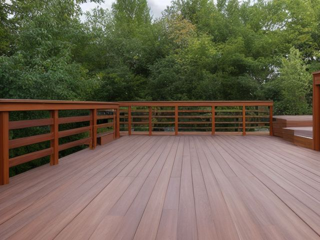

Patio or Deck micro zone
The Surface, Rail, and Safety Zone
The structure you stand on and lean against, kept sound and kept clear.
One session: 45-75 min. most of it in Shine, because raking the board gaps is slow and it is also the inspection

What done looks like
Nothing on the deck that is not furniture, daylight visible through the gaps between boards, no green film on the shaded treads, and every rail post immovable when you push it hard.
Check these before you start
- FallA railing post that moves when you push it will not hold an adult who stumbles into it, and the drop off the side of a deck is onto whatever is stored below.
- FallAlgae film on the shaded boards and the stair treads turns to grease after rain, and the treads are where a slip costs the most.
- Fall, cut, or crushPopped fasteners and lifted splinters on a deck people cross barefoot in summer cut feet, and a raised screw head is also what catches a toe.
The six passes, in order
Work them in this order. Sorting after you have arranged things means arranging things you were about to remove.
Sort
Decide what stays. Everything else leaves the zone now.
This zone earns its state by having nothing stored in it. The planter that has drifted into the walking route, the hose coiled across the top step, and the bag of paving sand leaning on a rail post all come off the deck entirely, because each of them holds damp against the wood it sits on as well as standing in your way.
Straighten
Give what stays a home, placed where the hand actually reaches.
Walk the route from the door to the steps to the gate carrying a full laundry basket in both arms so you cannot see your feet. Whatever you have to step around gets moved. The mat sits square at the threshold with its edges lying flat, not curling up at a corner.
Shine
Clean it, and use the cleaning to inspect what you cannot see when it is full.
Rake the gaps between boards clear with a putty knife or a paint stirrer, because a blocked gap holds water against the board ends and that is precisely where rot begins. Then scrub the green algae film off the shaded boards and the stair treads, which is the slipperiest surface anywhere on the property after rain.
Safety
Make the zone safe for everybody who uses it, including the shortest person.
Grab the top rail at every post and push hard, outward and then down. Any movement, any softness under your thumb, any screw head standing proud is a stop and fix today. Check that every stair tread rises the same height as the ones above and below it, and that the step lights still come on, because one odd riser in the dark is how people go down. Find it, and fix it now.
Standardize
Write down the best way you know today, so it survives you forgetting.
A dated tag inside the back door records when the rail was last pushed and the boards last probed, so the next check starts from a written date rather than an argument about whether you did it in spring.
Sustain
Attach the reset to something that already happens, so it keeps itself.
Every time you sweep the deck, push the rail at two posts before the broom goes away.
The board that gives
There is a board you step over without thinking, or one that flexes slightly under your weight, and you have quietly filed it as fine. Test it properly instead. Push a screwdriver into the board where it crosses a joist, and again into the board end nearest the house. If the tip sinks in with light pressure, that board is finished and replacing one board is a morning's work. The harder judgment is what a soft board is telling you. If two boards side by side are soft, or if the softness is at the ledger where the deck meets the wall of the house, then the framing underneath has the problem and the surface is only the symptom. The rule that settles it: soft in one spot on top, replace the board yourself; soft in two adjacent places or soft at the wall, stop putting people on it and get someone underneath it with a torch before the next time you have guests standing out here together.
Cleaning it properly
This is the surface you trust with your whole weight, so cleaning it is how you read it. Rake the gaps clear, scrub the algae off the shaded treads, and let the deck tell you where water has been sitting.
Inspect as you clean. Cleaning is the only time you see the zone empty, so use it.
- A board end or a blocked gap that stays dark and spongy under the brush is rot setting in. Press it and flag any board that gives.
- Rust bleeding out of a fastener and staining the board around it means the screw or nail is corroding below the surface.
- A proud screw head or a lifted splinter that catches the brush is a bare foot waiting to happen. Note exactly where it sits.
- A tread that flexes underfoot as you scrub, or a stringer gone soft at the bottom, is a stair losing its footing.
- A step light gone dead or fogged behind its lens, and algae that regrows fast in one spot, both point to water pooling where it should drain.
The standard that keeps it fixed
Nothing stored on the walking route, gaps clear, and a dated tag recording the last rail push and board probe.
Reset trigger. Every time you sweep, push the rail at two posts before you put the broom away.
Next in this room
- The Outdoor Storage Zone, the zone before this one
- All 6 micro zones in the Patio or Deck
Related reading
- What is 6S?
- This zone's safety pass, in full
- Is one spot in this zone always the one you skip?
- Why this zone gets messy again
- Decluttering vs. organizing
- Before you buy storage for this zone
- Still does not fit, even after the honest count?
- Does something in this zone actually get used somewhere else?
- Stuck on one item in this zone?
- Written the standard, but nobody else follows it?
- Does everyone in the house agree what "done" looks like here?
- Does more than one person use this zone?
- Found a duplicate of something in this zone?
- Why the standard above names one home per category
- Is the everyday item in this zone actually the easy one to reach?
- Not sure whether to keep something in this zone?
- Does this zone keep running out of something?
- Started this zone and stalled partway through?
- Have you stopped noticing the clutter in this zone?
When you want it off the screen
Carry The Surface, Rail, and Safety Zone into the room
The method above is complete and free. The Whole House Print Pack puts The Surface, Rail, and Safety Zone and the other 113 micro zones on 684 printable cards, so the steps you just read are not stuck behind a phone screen while your hands are full.
The Print Pack, 19 dollarsJust this zone, 4 dollarsOr draw a card free
The Surface, Rail, and Safety Zone on its own is 4 dollars for 6 cards. All 114 micro zones is 19 dollars for 684. The whole house is the better buy; the single zone is here so you can take only what you are working on.
If The Surface, Rail, and Safety Zone keeps fighting back, the real problem usually sits somewhere else in the room. A one hour virtual consult is 250 dollars: we find the function, the friction and the root cause together, and you keep a written standard for the space. See what a consult covers.